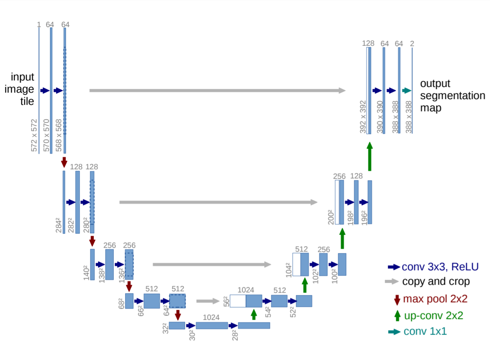

1 Introduction
Today’s blog post is going to be short and sweet. Today, we will be looking at how to implement the U-Net architecture in PyTorch in 60 lines of code.
This blog is not an introduction to Image Segmentation or theoretical explanation of the U-Net architecture, for that, I would like to refer the reader to this wonderful article by Harshall Lamba. Rather, this blog post is a step-by-step explaination of how to implement U-Net from scratch in PyTorch.
In this blogpost - first, we will understand the U-Net architecture - specifically, the input and output shapes of each block. We look at the U-Net Architecture with a factory production line analogy to keep things simple and easy to digest. Next, we will translate our understanding of U-Net architecture to concise PyTorch code.
I also share a working notebook to train this implementation of U-Net of SIIM ACR Pneumothorax Kaggle competition here. Should be as simple as to switch and model in to the implemention mentioned in this blog post.
So, let’s get started.
2 Understanding Input and Output shapes in U-Net

As can be seen from fig-1, the architecture is “U-shaped”, hence the name “U-Net”. The complete architecture consists of two parts - the Encoder and the Decoder. The part on the left of fig-1 (yellow highlight in fig-2) is the Encoder whereas the part on the right is the Decoder (orange highlight in fig-2).
From the paper: > The network architecture is illustrated in Fig-1. It consists of a contracting path (left side) and an expansive path (right side). The contracting path follows the typical architecture of a convolutional network.
The Encoder is like any standard CNN - such as ResNet, that extracts a meaningful feature map from an input image. As is standard practice for a CNN, the Encoder, doubles the number of channels at every step and halves the spatial dimension.
Next, the Decoder actually upsamples the feature maps, where at every step, it doubles the spatial dimension and halves the number of channels (opposite to that of what an Encoder does).
3 The Factory Production Line Analogy
Let’s now look at the U-Net with a Factory Production Line analogy as in fig-2.

We can think of this whole architecture as a factory line where the Black dots represents assembly stations and the path itself is a conveyor belt where different actions take place to the Image on the conveyor belt depending on whether the conveyor belt is Yellow or Orange.
If it’s Yellow, we downsample the Image, using Max Pooling 2x2 operation that reduces both the Height and Width of the Image by half. If the conveyor belt is Orange, we apply an upsampling operation ConvTranspose2d which doubles the height and width of the image and reduces the number of channels by half. Therefore, the Orange conveyor built performs an operation that is opposite to that performed by Yellow belt.
Also, it is key to note that in the Decoder side, at every assembly station (Black dot), the outputs from the Encoder assembly stations are also concatenated to the inputs.
Let’s start to now turn this simple understanding to PyTorch Code.
4 The Black Dots / Block
All assembly stations - the black dots in fig-2 have two Conv2D operations with ReLU activation between them. The Convolution operations have kernel size of 3, and no padding. Therefore, the output feature map doesn’t have the same Height and Width as the input feature map.
From the paper: > The contractive path consists of the repeated application of two 3x3 convolutions (unpadded convolutions), each followed by a rectified linear unit (ReLU) and a 2x2 max pooling operation with stride 2 for downsampling. At each downsampling step we double the number of feature channels.
Let’s write Block in code.
class Block(nn.Module):
def __init__(self, in_ch, out_ch):
super().__init__()
self.conv1 = nn.Conv2d(in_ch, out_ch, 3)
self.relu = nn.ReLU()
self.conv2 = nn.Conv2d(out_ch, out_ch, 3)
def forward(self, x):
return self.relu(self.conv2(self.relu(self.conv1(x))))That’s simple - two convolution operations, one that doubles the number of channels from in_ch to out_ch and another that goes from out_ch to out_ch. Both are 2D convolutions with kernel size 3 and no padding as mentioned in the paper followed by ReLU activation.
Let’s make sure this works.
enc_block = Block(1, 64)
x = torch.randn(1, 1, 572, 572)
enc_block(x).shape
>> torch.Size([1, 64, 568, 568])So this is looking good, the output size matches that in fig-1 top-left. Given an input image with shape 1x572x572 the output is of shape 64x568x568.
5 The Encoder
Now that we have implemented the Blocks or the black dots in fig-2, we are ready to implement the Encoder. The Encoder is the contractive path of the U-Net Architecture.
So far we have implemented the convolution operations but not the downsampling part. As mentioned in the paper: > Each block is followed by a 2x2 max pooling operation with stride 2 for downsampling.
So that’s all we need to do, we need add MaxPooling operation (Yellow conveyor belt in fig-2) that is performed between two Block operations.
class Encoder(nn.Module):
def __init__(self, chs=(3,64,128,256,512,1024)):
super().__init__()
self.enc_blocks = nn.ModuleList([Block(chs[i], chs[i+1]) for i in range(len(chs)-1)])
self.pool = nn.MaxPool2d(2)
def forward(self, x):
ftrs = []
for block in self.enc_blocks:
x = block(x)
ftrs.append(x)
x = self.pool(x)
return ftrsThat’s all we have done. On the Encoder side, the encoder block or self.enc_blocks is a list of Block operations. Next, we perform the MaxPooling operation to the outputs of every block. Since, we also need to store the outputs of the block, we store them in a list called ftrs and return this list.
Let’s make sure this implementation works.
encoder = Encoder()
# input image
x = torch.randn(1, 3, 572, 572)
ftrs = encoder(x)
for ftr in ftrs: print(ftr.shape)
>>
torch.Size([1, 64, 568, 568])
torch.Size([1, 128, 280, 280])
torch.Size([1, 256, 136, 136])
torch.Size([1, 512, 64, 64])
torch.Size([1, 1024, 28, 28])The output shapes exactly match the shapes mentioned in fig-1 - so far, so good. Having implemented the Encoder, we are now ready to move on the Decoder.
6 The Decoder
The Decoder, is the expansive path of the U-Net Architecture.
From the paper: > Every step in the expansive path consists of an upsampling of the feature map followed by a 2x2 convolution (“up-convolution”) that halves the number of feature channels, a concatenation with the correspondingly cropped feature map from the contracting path, and two 3x3 convolutions, each followed by a ReLU. The cropping is necessary due to the loss of border pixels in every convolution.
Note that we have already implemented the part where two 3x3 convolutions occur followed by ReLU activation in Block. All we need to do to implement the Decoder is to add the “up-convolution” (the Orange highlight in fig-2) and the feature concatenation with correspondingly cropped feature map from the contracting path (the gray arrows in fig-2).
Note that in PyTorch, the ConvTranspose2d operation performs the “up-convolution”. It accepts parameters like in_channels, out_channels, kernel_size and stride amongst others.
Since the in_channels and out_channels values are different in the Decoder depending on where this operation is performed, in the implementation, the “up-convolution” operations are also stored as a list. Stride and kernel size are always 2 as mentioned in the paper.
Now, all we need is to perform feature concatenation. Let’s look at the implementation of the Decoder to understand how all this works more clearly -
class Decoder(nn.Module):
def __init__(self, chs=(1024, 512, 256, 128, 64)):
super().__init__()
self.chs = chs
self.upconvs = nn.ModuleList([nn.ConvTranspose2d(chs[i], chs[i+1], 2, 2) for i in range(len(chs)-1)])
self.dec_blocks = nn.ModuleList([Block(chs[i], chs[i+1]) for i in range(len(chs)-1)])
def forward(self, x, encoder_features):
for i in range(len(self.chs)-1):
x = self.upconvs[i](x)
enc_ftrs = self.crop(encoder_features[i], x)
x = torch.cat([x, enc_ftrs], dim=1)
x = self.dec_blocks[i](x)
return x
def crop(self, enc_ftrs, x):
_, _, H, W = x.shape
enc_ftrs = torchvision.transforms.CenterCrop([H, W])(enc_ftrs)
return enc_ftrsSo the self.dec_blocks is a list of Decoder Blocks that perform the two conv + ReLU operation as mentioned in the paper. The self.upconvs is a list of ConvTranspose2d operations that perform the “up-convolution” operations. And finally, in the forward function, the decoder accepts the encoder_features which were output by the Encoder to perform the concatenation operation before passing the result to Block.
That’s really all there is inside the Decoder of a U-Net. Let’s make sure this implementation works:
decoder = Decoder()
x = torch.randn(1, 1024, 28, 28)
decoder(x, ftrs[::-1][1:]).shape
>> (torch.Size([1, 64, 388, 388])And there it is, the final feature map is of size 64x388x388 which matches that of fig-1. We have just successfully implemented both the Encoder and the Decoder so far.
You might ask why do we do ftrs[::-1][1:]?
Do you remember the shapes of the outputs of the Encoder? They were:
torch.Size([1, 64, 568, 568]) #0
torch.Size([1, 128, 280, 280]) #1
torch.Size([1, 256, 136, 136]) #2
torch.Size([1, 512, 64, 64]) #3
torch.Size([1, 1024, 28, 28]) #4Now, from fig-1, we can see that the feature map with shape torch.Size([1, 1024, 28, 28]) is never really concatenated but only a “up-convolution” operation is performed on it. Also, the 1st Decoder block in fig-1 accepts the inputs from the 3rd position Encoder block. Similarly, the 2nd Decoder block accepts the inputs from the 2nd position Encoder block and so on. Therefore, the encoder_features are reversed before passing them to the Decoder and since the feature map with shape torch.Size([1, 1024, 28, 28]) is not concatenated to the Decoder blocks, it is not passed.
Hence, the input to the decoder is ftrs[::-1][1:].
7 U-Net
Great, we have so far implemented both the Encoder and the Decoder of U-Net architecture. Let’s put it all together to complete our implementation of U-Net.
class UNet(nn.Module):
def __init__(self, enc_chs=(3,64,128,256,512,1024), dec_chs=(1024, 512, 256, 128, 64), num_class=1, retain_dim=False, out_sz=(572,572)):
super().__init__()
self.encoder = Encoder(enc_chs)
self.decoder = Decoder(dec_chs)
self.head = nn.Conv2d(dec_chs[-1], num_class, 1)
self.retain_dim = retain_dim
def forward(self, x):
enc_ftrs = self.encoder(x)
out = self.decoder(enc_ftrs[::-1][0], enc_ftrs[::-1][1:])
out = self.head(out)
if self.retain_dim:
out = F.interpolate(out, out_sz)
return outLet’s make sure this implementation works:
unet = UNet()
x = torch.randn(1, 3, 572, 572)
unet(x).shape
>> torch.Size([4, 1, 388, 388])The output shape matches that of fig-1.
As mentioned before, since the convolution operations are 3x3 without padding, the output feature map size is not the same as the input feature map size. Also, as shown in fig-1 the final output is of shape 1x388x388 while the input Image had dimensions 572x572. This can create problems when calculating BCELoss in PyTorch as it expects the input and output feature maps to have the same shape.
Therefore, if we want to retain_dim, I have added F.interpolate operation to the U-Net to make the output size same as the input Image size.
Great, that was all! We have just successfully implemented the U-Net architecture in PyTorch. Everything put together, this looks something like:
class Block(nn.Module):
def __init__(self, in_ch, out_ch):
super().__init__()
self.conv1 = nn.Conv2d(in_ch, out_ch, 3)
self.relu = nn.ReLU()
self.conv2 = nn.Conv2d(out_ch, out_ch, 3)
def forward(self, x):
return self.conv2(self.relu(self.conv1(x)))
class Encoder(nn.Module):
def __init__(self, chs=(3,64,128,256,512,1024)):
super().__init__()
self.enc_blocks = nn.ModuleList([Block(chs[i], chs[i+1]) for i in range(len(chs)-1)])
self.pool = nn.MaxPool2d(2)
def forward(self, x):
ftrs = []
for block in self.enc_blocks:
x = block(x)
ftrs.append(x)
x = self.pool(x)
return ftrs
class Decoder(nn.Module):
def __init__(self, chs=(1024, 512, 256, 128, 64)):
super().__init__()
self.chs = chs
self.upconvs = nn.ModuleList([nn.ConvTranspose2d(chs[i], chs[i+1], 2, 2) for i in range(len(chs)-1)])
self.dec_blocks = nn.ModuleList([Block(chs[i], chs[i+1]) for i in range(len(chs)-1)])
def forward(self, x, encoder_features):
for i in range(len(self.chs)-1):
x = self.upconvs[i](x)
enc_ftrs = self.crop(encoder_features[i], x)
x = torch.cat([x, enc_ftrs], dim=1)
x = self.dec_blocks[i](x)
return x
def crop(self, enc_ftrs, x):
_, _, H, W = x.shape
enc_ftrs = torchvision.transforms.CenterCrop([H, W])(enc_ftrs)
return enc_ftrs
class UNet(nn.Module):
def __init__(self, enc_chs=(3,64,128,256,512,1024), dec_chs=(1024, 512, 256, 128, 64), num_class=1, retain_dim=False, out_sz=(572,572)):
super().__init__()
self.encoder = Encoder(enc_chs)
self.decoder = Decoder(dec_chs)
self.head = nn.Conv2d(dec_chs[-1], num_class, 1)
self.retain_dim = retain_dim
def forward(self, x):
enc_ftrs = self.encoder(x)
out = self.decoder(enc_ftrs[::-1][0], enc_ftrs[::-1][1:])
out = self.head(out)
if self.retain_dim:
out = F.interpolate(out, out_sz)
return out8 Conclusion
I hope that today, I was able to provide a concise and easy to digest implementation of the U-Net architecture with proper explanations of every line of code.
For a complete working notebook to train this implementation, refer here.
As usual, in case I have missed anything or to provide feedback, please feel free to reach out to me at @amaarora.
Also, feel free to subscribe to my blog here to receive regular updates regarding new blog posts. Thanks for reading!